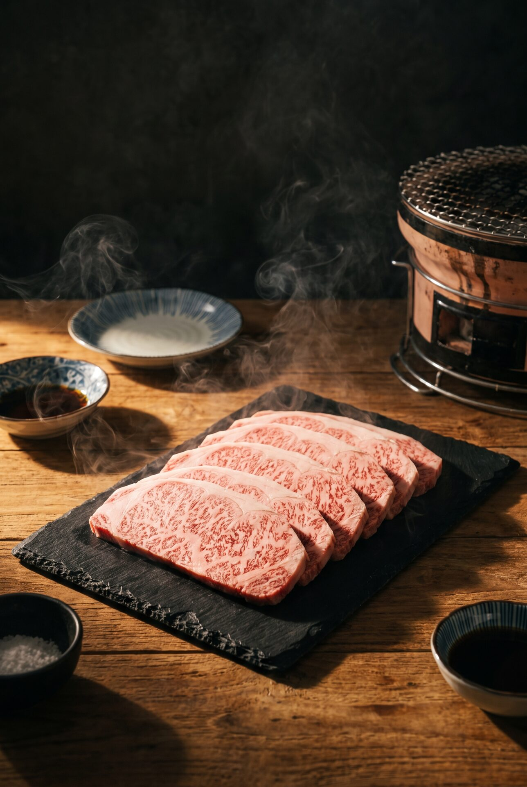
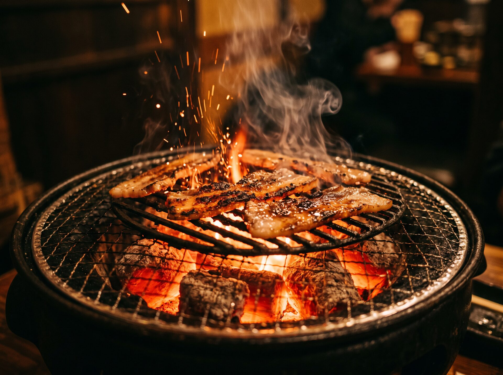
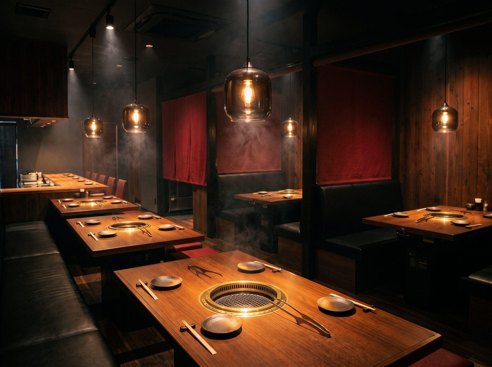

Our Story · 私たちの物語
Ichiban means number one.
So does our beef.
Tucked above Number 6 Kopitiam on Jalan Song, Yakiniku Ichiban brings the ritual of Japanese tabletop barbecue to Kuching. Every cut — from buttery pork belly to snowflake-marbled A5 Wagyu — is sliced fresh daily and served raw for you to sear exactly the way you like it.
No shortcuts. No frozen stock. Just great meat, live fire, and the sizzle that makes a table go quiet.
- Fresh-cut daily — never pre-frozen portions
- True A5 Wagyu — including Sankakubara, the "King of Yakiniku"
- Grill-at-your-table — the full yakiniku experience


